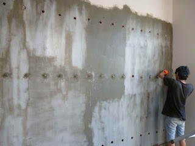

Pembenaran Dan Perkuatan Struktur Beton
Dengan makin banyaknya struktur bangunan yang mengalami kerusakan pada ketika masa layannya maupun pada ketika cara kerja konstruksi, karenanya dibutuhkan pengetahuan mengenai teknologi pembenaran dan perkuatan yang pas guna.
Pada paper ini akan diberi tahu sebagian sistem serta material perbaikan dan perkuatan yang bisa diterapkan, dan kontrol kualitas selama dan sesudah cara kerja pelaksanaan perbaikan dan perkuatan. Kecuali itu juga dibahas mengenai pemakaian Self Compacting Concrete (SCC) pada cara perkuatan
Jasa Injeksi Beton di Padang seperti kita kenal segala, pada saat ini dengan makin banyaknya bangunan yang mengalami kerusakan struktur ataupun non-struktur; pada dikala masa layannya maupun pada ketika proses pembangunan; yang diakibatkan oleh unsur dari bangunan itu sendiri maupun faktor dari luar. Dimana bentuk dan tingkat kerusakan yang terjadi mulai dari yang ringan hingga berat.
Dengan adanya tuntutan bahwa bangunan yang mengalami kerusakan sepatutnya sudah dapat secepatnya difungsikan kembali, maka perlu adanya penanganan kepada kerusakan-kerusakan yang terjadi, baik dengan menjalankan koreksi maupun perkuatan. Seringkali dengan terbatasnya waktu, maka pembetulan atau perkuatan yang dilaksanakan tak memandang beberapa kaidah yang berkaitan dengan kapasitas struktur dan prosedur pelaksanan serta kontrol mutu.
Oleh sebab itu untuk menerima hasil pembetulan dan perkuatan yang ideal guna dan menempuh sasaran yang sudah ditentukan, maka perlu dilakukan investigasi untuk mendapatkan data-data kerusakan baik via pengamatan visual ataupun dengan bantuan pengujian non-destructive ataupun semi destructive dan mereview dokumen dari struktur yang ada. Dari hasil investigasi tersebut, kemudian dijalankan analitik dan evaluasi pada struktur hal yang demikian untuk memutuskan apakah kerusakan yang terjadi cuma perlu pembenaran atau perlu perkuatan atau dalam situasi yang terjelek struktur yang mengalami kerusakan mesti dikerjakan pembongkaran dan dibangun struktur baru.
Metode Dan Material Koreksi
Penentuan cara dan material koreksi lazimnya tergantung pada jenis kerusakan yang ada, disamping besar dan luasnya kerusakan yang terjadi, lingkungan dimana struktur berada, perlengkapan yang tersedia, kecakapan tenaga pelaksana serta batasan-batasan dari pemilik seperti keterbatasan ruang kerja, kemudahan pengerjaan, waktu cara kerja dan biaya perbaikan.
Tipe kerusakan yang kerap terjadi merupakan kerusakan berupa keretakan dan spalling (terlepasnya bagian beton).
Keretakan
Keretakan dibedakan retak struktur dan non-struktur. Retak struktur biasanya terjadi pada elemen struktur beton bertulang, sedang retak non-struktur terjadi dinding bata atau dinding non-beton lainnya.
Untuk retak non-struktur, bisa digunakan metode injeksi dengan material pasta semen yang dicampur dengan expanding agent serta latex atau hanya melaksanakan sealing saja dengan material polymer mortar atau polyurethane sealant.
Sedang pada retak struktur, diaplikasikan sistem injeksi dengan material epoxy yang mempunyai viskositas yang rendah, sehingga bisa mengisi dan sekaligus menempelkan kembali bagian beton yang terpisah.
Cara injeksi dapat dilaksanakan secara manual ataupun dengan mesin yang bertekanan, tergantung pada lebar dan dalamnya keretakan.
Spalling
Sistem perbaikan pada kerusakan spalling, tergantung pada besar dan dalamnya spalling yang terjadi.
Patching
Untuk spalling yang tidak terlalu dalam (kurang dari selimut beton) dan zona yang tidak luas, bisa diaplikasikan cara patching.
Metode pembenaran ini merupakan metode perbaikan manual, dengan melaksanakan penempelan mortar secara manual. Pada dikala pelaksanaan yang mesti diamati adalah penekanan pada ketika mortar direkatkan; sehingga benar-benar didapatkan hasil yang padat.
Material yang dipakai harus memiliki sifat mudah dijalankan, tidak susut dan tidak jatuh setelah terpasang (lihat maksimum ketebalan yang dapat dipasang tiap lapis), terutama untuk pekerjaan pembetulan overhead. Lazimnya yang diterapkan yaitu monomer mortar, polymer mortar dan epoxy mortar.
Grouting
Sedang pada spalling yang melebihi selimut beton, dapat digunakan metode grouting, adalah metode perbaikan dengan menjalankan pengecoran memakai bahan non-shrink mortar.
Sistem ini dapat dilakukan secara manual (gravitasi) atau menggunakan pompa.
Pada sistem pembenaran ini yang perlu dilihat yaitu bekisting yang terpasang mesti benar-benar kedap, supaya tidak ada kebocoran spesi yang mengakibatkan terjadinya keropos dan mesti kuat agar mampu menahan tekanan dari bahan grouting.
Material yang diaplikasikan harus mempunyai sifat mengalir dan tak susut. Biasanya diterapkan bahan dasar semen atau cat epoxy.
Shotcrete (Beton Tembak)
Bila spalling yang terjadi pada zona yang amat luas, maka sebaiknya dipakai sistem Shot-crete. Pada cara ini tidak dibutuhkan bekisting lagi seperti halnya pengecoran pada biasanya.
Sistem shotcrete ada dua sistim yaitu dry-mix dan wet-mix.
Pada sistim dry-mix, campuran yang dimasukkan dalam mesin berupa campuran kering, dan akan tercampur dengan air di ujung selang. Sehingga kwalitas dari beton yang ditembakkan sungguh-sungguh tergantung pada keahlian kekuatan yang mengendalikan selang, yang mengontrol jumlah air. Tapi sistim ini amat mudah dalam perawatan mesin shotcretenya, karena tak pernah terjadi ‘blocking’.
Pada sistim wet-mix, campuran yang dimasukkan dalam mesin berupa campuran berair, sehingga kualitas beton yang ditembakkan lebih seragam. Namun sistim ini membutuhkan perawatan mesin yang tinggi, apalagi jikalau sampai terjadi ‘blocking’.
Pada cara shotcrete, lazimnya diterapkan additive untuk mempercepat pengeringan (accelerator), dengan tujuan mempercepat pengerasan dan mengurangi terjadinya banyaknya bahan yang terpantul dan jatuh (rebound).
Grout Preplaced Aggregat (Beton Prepack)
Metode perbaikan lainnya untuk memperbaiki kerusakan berupa spalling yang cukup dalam ialah dengan sistem Grout Preplaced Aggregat. Pada sistem ini beton yang diciptakan merupakan dengan metode menempatkan sejumlah agregat (umumnya 40% dari volume kerusakan) kedalam bekisting, sesudah itu dilaksanakan pemompaan bahan grout, kedalam bekisting.
Material grout yang lazimnya digunakan ialah polymer grout, yang mempunyai flow cukup tinggi dan tak susut.
Cara Dan Material Perkuatan
Dalam pemilihan metode perkuatan, patut diamati beberapa hal yakni kapasitas struktur, lingkungan dimana struktur berada, perlengkapan yang tersedia, kemampuan tenaga pelaksana serta batasan-batasan dari pemilik seperti keterbatasan ruang kerja, kemudahan pengerjaan, waktu pelaksanaan dan tarif perkuatan.
Metode perkuatan yang biasanya dilakukan yakni :
- Memperpendek rentang dari struktur dengan konstruksi beton ataupun dengan konstruksi baja.
Tujuannya yaitu memperkecil gaya-gaya dalam yang terjadi, melainkan mesti dikaji ulang akibat dari perpendekan jangka ini yang menyebabkan perubahan dari gaya-gaya dalam hal yang demikian. Umumnya dikerjakan dengan menambah balok atau kolom baik dari beton ataupun dari baja. - Memperbesar dimensi daripada konstruksi beton.
Biasanya digunakan beton sebagai material untuk memperbesar dimensi struktur; dengan adanya admixture beton generasi baru, dimungkinkan untuk menjadikan beton yang dapat memadat sendiri (self compacting concrete), dibahas di komponen 4 – Self Compacting Concrete. Imbas dari penambahan dimensi hal yang demikian, maka semestinya dipandang bahwa secara keseluruhan bobot dari Bangunan hal yang demikian bertambah, sehingga semestinya dilaksanakan analisis secara menyeluruh dari struktur atas hingga pondasi. - Menambah plat baja. Tujuan dari penambahan ini merupakan untuk menambah energi pada bagian tarik dari struktur Bangunan. Didalam penambahan plat baja hal yang demikian, semestinya dijamin bahwa plat baja menjadi satu kesatuan dengan struktur yang ada, lazimnya untuk menjamin lekatan antara plat baja dengan struktur beton diaplikasikan epoxy adhesive.
- Menjalankan external prestressing. Dengan sistem ini, kapasitas struktur ditingkatkan dengan melaksanakan prestress di luar struktur, bukan didalam seperti pada struktur baru. Memakai perlu diamati ialah penempatan anchor head, sehingga tak menyebabkan perlemahan pada struktur yang ada.
Material yang umumnya diterapkan adalah baja prestress, tetapi pada dikala ini telah mulai digunakan bahan dari FRP (Fibre Reinforced Polymer). - Format FRP (Fibre Reinforced Polymer)
Prinsip ketimbang penambahan FRP sama seperti penambahan plat baja, ialah menambah energi di bagian tarik dari struktur. FRP yang kerap digunakan pada perkuatan struktur yakni dari bahan carbon, aramid dan glass. Wujud FRP yang tak jarang digunakan pada perkuatan struktur yaitu Plate / Composite dan Fabric / Wrap. Bentuk plate lebih tepat sasaran dan efisien untuk perkuatan lentur baik pada balok ataupun plat serta pada dinding; sedang bentuk wrap lebih efektif dan efisien untuk perkuatan geser pada balok serta untuk meningkatkan kapasitas beban axial dan geser pada kolom./li>
Informasi Lengkap Pemesanan
Google Maps: https://www.google.com/maps/d/u/0/viewer?mid=1mam0F9p_pMJ6kDE8x3Wz9JTFKz-RbGqj&ll=-6.252810003415505%2C106.831905&z=16
Note: https://www.facebook.com/notes/distributor-of-industrial-supply/kontraktor-jasa-injeksi-beton/1785191041780775/
Event: https://www.facebook.com/events/1732979133431399/
Portfolio Produk: https://www.facebook.com/1681607345472479/photos/?tab=album&album_id=1685055988460948
Behance: https://www.behance.net/gallery/60202959/Jasa-Injeksi-Beton